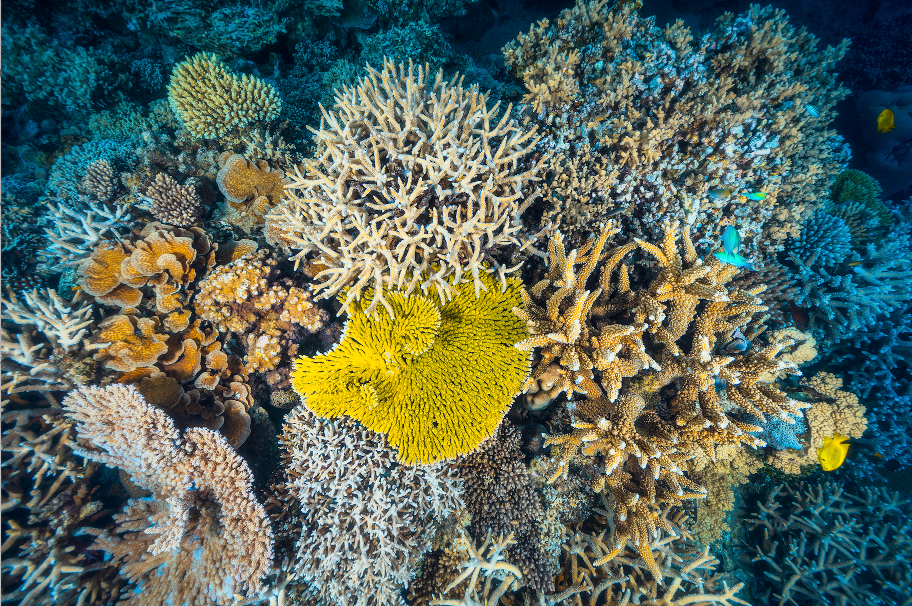

Mercan Resifi Stres & Ağarma Monitörü
American Samoa
TR
EN
Year
2013
PROJECTED
SST
28.0°C
DHW
0.0
Stress
0.00
Tick
0
Protected
0%
Clear All
Dead Colonies
0
Bleaching
0
Hot Zone
–
Recovering
0%
2100 Forecast
—
—
—
Region
American Samoa
Main Hawaiian Islands
Mariana Archipelago
Northwestern Hawaiian Islands
Pacific Remote Island Areas
Temperature (°C)
28.6
Coral Cover (%)
80
Recovery Speed
Slow
Medium
Fast
Restoration Budget
$0M
Active restoration of dead coral colonies
Scenarios
Business as Usual
Optimal Policies
MPA Only
Pause
Play
Fast
Reset
Seed
Compare
CSV
0
Policy Controls
Net Warming:
—
pH Risk:
—
Fish:
—
Policies:
—
Emission Sources
50
50
50
50
30
0
Ocean & Reef Policies
Climate agreements
US
CN
EU
0
Unregulated
Low
Medium
Strict
None
Sustainable
Strict
0
Early Warning System
Reef map
NOAA NCRMP
American Samoa
Main Hawaiian Islands
2013
2100
Healthy
Stressed
Bleached
Dead
Recovering
Simulation Analysis
Peak Bleaching
—
Worst Year
—
Current Coral Cover
—
Dead Cells
—
Protected Area
—
2100 Forecast
—
Charts
Tour

NOAA NCRMP · 2013–2100
TR
EN